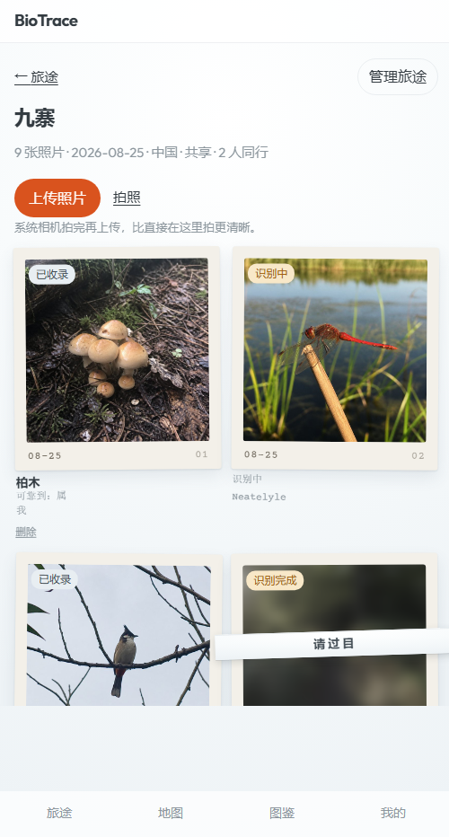

settle.open 出现在哪三处aria-label 已删（19 处），第三处那个名字连同
album.liftPhoto / album.openObservation 一起删掉了。settle.open 回到单一 key：
封条与结算页按钮都走主题说法。本页第 ③ 节关于读屏的说明仍可读，但「拆 key」那部分已不成立。
按真实 CSS 值近似渲染（字体、照片用占位）。真实位置：ObservationSettlePage.tsx:225 · TripAlbumPage.tsx:663,697
settle.open 不只用在结算页按钮上——它还写着相册里「待开包」那格的封条（横穿照片、甩出卡纸两侧、斜 1.4°），
以及那格的无障碍名。所以把按钮改词，相册墙上会跟着变。下面三列分别是「现在」「清透说法」「日光说法」放回去的样子。
基础表 settle.open「看看是什么」
识别结果
已经识别出这是什么了。
覆盖表 settle.open「请过目」（老文案）
鉴定证书
这趟遇见的生命，现在有名字了。
覆盖表 settle.open「启封」（有据：拆封）
定名图版
此行所见，已录其名。
settle.open 原来一个 key 同时用在三处——结算页按钮（有文字）、相册封条（有带子）、相册按钮名（没东西）。
前两处跟着主题改没问题，第三处不行，所以要拆开。
这东西在 app 里到处都是：16 个文件里都有（底部四个导航、地图标记、图鉴卡片…）。凡是「没有文字的按钮」都得有个能被念出来的名字。
127.0.0.1:5173，清透皮肤）；右：同一个格在真 DOM 里的样子（--dump-dom 抓的）。

<article class="film-tile is-pending">
<button class="film-tile-link" aria-label="看看是什么"> ← 读屏念的名字
<span class="film-tile-window"><img alt="识别完成"></span>
<span class="film-tile-seal">请过目</span> ← 看得见的封条（清透说法）
<span class="badge warn">识别完成</span>
<span class="film-tile-mark">08-25 · 04</span>
<span class="film-tile-caption">结论已经落笔。 · 我</span>
</button>
</article>
同页另外 8 格的 aria-label：拿起这张（能拿起的那类）
.film-tile.is-pending），是短暂状态，不是一墙几十个。
本页零改动。你看完给个话：封条要不要跟着改（我倾向要）、aria-label 拆不拆（我倾向拆）。